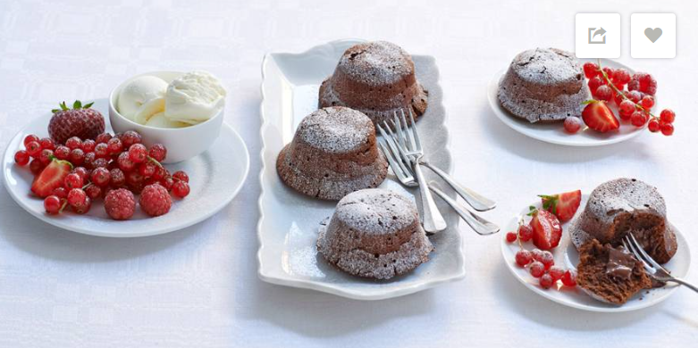

Smeltende chocoladecakejes
Het geheim van deze stromende cakejes? Je bakt ze nét niet helemaal gaar. Alleen voor chocoholcis!
Ingrediënten
- 25 gram ongezouten roomboter (+ extra om in te vetten)
- 100 gram donkere basterdsuiker
- 3 middelgrote eieren
- 2 tenen knoflook
- 25 gram tarwebloem (+ extra om te bestuiven)
- 1 mespunt zout
- 200 gram pure chocolade 72%
Bereidwijze
- Verwarm de oven voor op 200 graden Celsius.
- Vet de muffinvorm in en bestuif met wat bloem.
- Meng de boter en suiker met een mixer.
- klop één voor één de eireren door het boter-suikermengsel.
- Schep er de bloem en het zout door.
- Hak de chocolade in stukjes en verwarm au bain-marie.
- Spater de chocolade voorzichtig door het boter-suikermengsel.
- Schep het beslag in de muffinvorm.
- Bak de cakejes in 8-10 minuten gaar.
- Serveer direct

Combinatietip: Lekker met een bolletje vanille-ijs en rrod fruit.